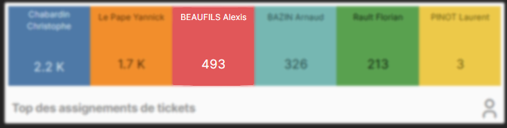
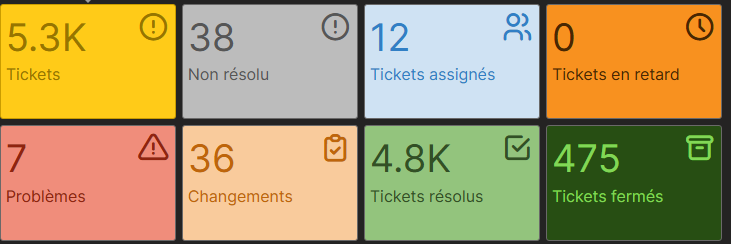

Support en environnement professionnel.

Support utilisateurs et gestion d'environ 490 tickets
Activité de support utilisateur en environnement professionnel avec traitement d'incidents, demandes et suivi via GLPI.
Contexte
Cette activité regroupe un volume important de tickets traités au quotidien dans un cadre professionnel. Elle montre ma capacité à prioriser, dépanner rapidement et accompagner les utilisateurs sur des demandes très variées, tout en gardant une trace des interventions dans GLPI.
Environ 490 tickets.
Depuis mes débuts de stage a la mairie de Canteleu jusqu'a aujourd'hui.
Support quotidien avec GLPI.
Activités réalisées
- Remplacement et deploiement de postes, ecrans, imprimantes et telephones.
- Création de comptes Active Directory et boîtes mail Microsoft 365.
- Assistance a l'installation et a l'usage du VPN.
- Gestion des droits sur les fichiers et dossiers partages.
- Création de badges d'accès avec SimonsVoss.
- Participation a la résolution d'incidents avec prestataires externes.
Difficultés et points d'attention
- Prioriser correctement les demandes selon leur impact sur l'activite.
- Communiquer de manière claire avec les utilisateurs.
Captures GLPI


Competences BTS SIO SISR mobilisees
- Accompagner les utilisateurs dans l'utilisation et la résolution d'incidents.
- Administrer des comptes, accès et services dans un cadre professionnel.
- Contribuer a la qualite du service informatique de la ville.